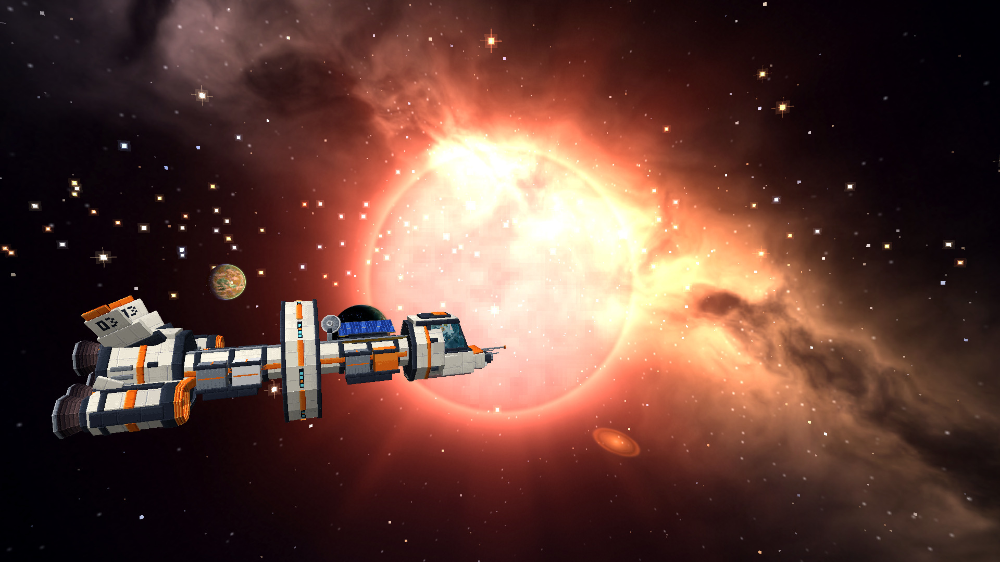
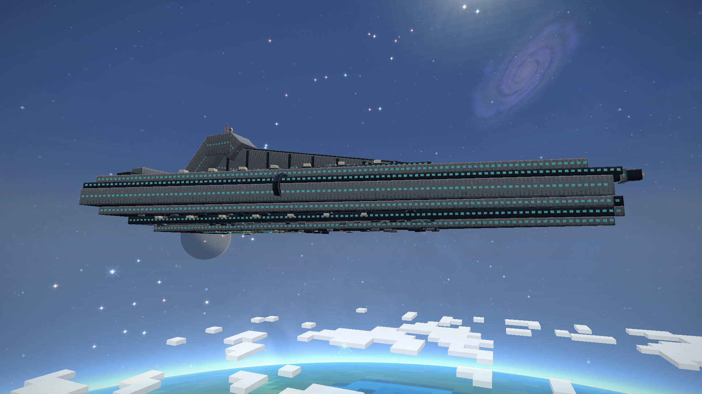
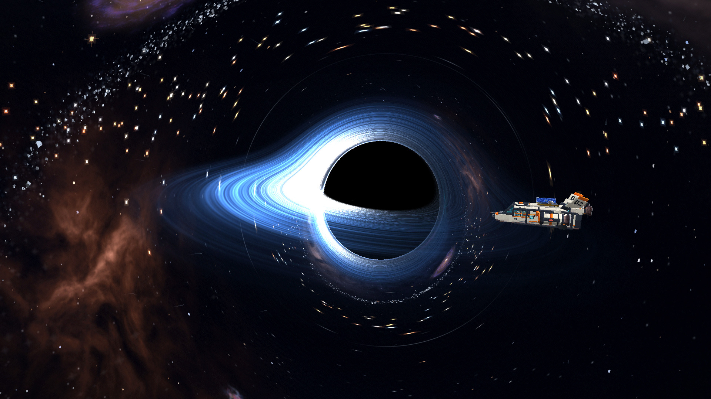
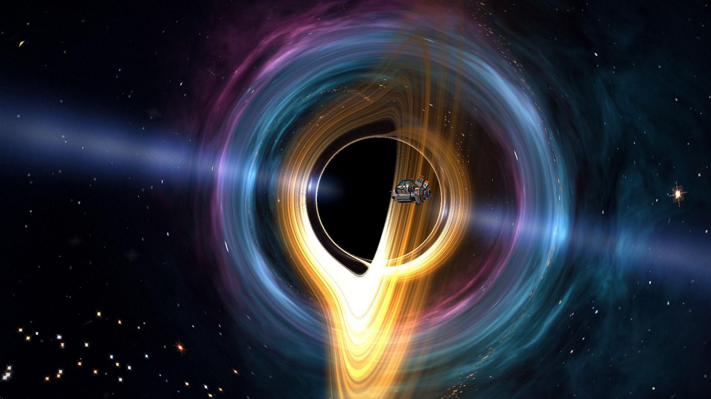

PÉRIHÉLIE
Concepts pour refaire tous les menus de Minecraft aux couleurs du mod : l'écran titre, le menu pause et tous les écrans qui vont avec. Tout ce qui bouge ici bougerait aussi en jeu. Les boutons réagissent au survol.
Choisis un concept par partie (par exemple Titre B, Pause A, Chargement 1), ou mélange des idées.
Écran titreIl remplace le panorama et le logo de Minecraft. La musique serait une musique du mod.
Titre AHublot
Une vraie image du mod en plein écran, qui avance très lentement comme vue d'un hublot. Les étoiles scintillent et une étoile filante passe de temps en temps. Le logo se dessine, et les boutons du HUD sont alignés à gauche. Animé : panoramique lent, étoiles, logo qui se trace, reflet sur les boutons.

Titre BOrbite
Une planète du mod tourne sur elle-même en bas de l'écran, avec son atmosphère et sa face de nuit. Un vaisseau la contourne sur une orbite tracée. Le menu suit l'arc des jauges du HUD, à droite. Animé : rotation de la planète, vaisseau en orbite, nuages, menu en arc.
Titre CCarte stellaire
Une galaxie spirale tourne en fond, comme sur la carte des étoiles du mod. Chaque bouton est un repère du HUD posé sur une étoile, avec son nom et sa « distance ». Au survol, le repère se verrouille. Animé : galaxie en rotation, repères qui pulsent, verrouillage au survol.
Menu pauseIl s'ouvre par-dessus le jeu, flouté. Les actions restent celles de Minecraft.
Pause APanneau latéral
Le panneau glisse depuis la gauche avec les actions. À droite, une carte « état de bord » : où tu es, ton vaisseau, sa coque, son ergol et ton temps de jeu. Une petite orbite animée montre ta position. Animé : entrée du panneau, jauges qui se remplissent, orbite.

Pause BConsole de bord
Le jeu se fige derrière une console au centre. En haut, la télémétrie du vaisseau, comme dans le HUD. En dessous, six grandes tuiles avec icône. En bas, un conseil du guide du mod qui change. Animé : télémétrie qui défile, tuiles qui s'éclairent, conseils.

Pause CHologramme
Ton vaisseau projeté en hologramme au centre, avec des lignes de balayage, qui tourne lentement. Les actions sont posées en arc autour de lui. C'est le plus spectaculaire des trois. Animé : vaisseau en fil de fer qui tourne, balayage, scintillement.

Les autres menusChargement, choix du monde, options, mort. Ils prendraient le style choisi plus haut ; voici des idées pour chacun.
Chargement 1Saut hyperespace
Pendant le chargement d'un monde ou une connexion, on traverse l'hyperespace comme pendant un saut du mod. La barre de progression est cyan, avec l'étape en cours et un conseil. Animé : tunnel d'étoiles, progression, étapes.
Chargement 2Approche planétaire
Variante plus calme : une planète grossit lentement pendant qu'on « arrive » et la barre fait le tour de la planète. Pour les entrées dans une dimension (Lune, Mars…), elle prendrait les couleurs de la destination. Animé : approche, anneau de progression.
MondesChoisir un monde
Chaque monde est une carte avec une planète miniature qui tourne, le dernier système visité, le vaisseau, et la date. Les boutons du bas restent ceux de Minecraft, restylés. Animé : planètes miniatures, sélection.

OptionsRéglages
Les options de Minecraft dans un panneau à onglets. Les curseurs et les interrupteurs sont redessinés comme les jauges du HUD. Les réglages du mod deviennent un onglet comme les autres. Animé : curseurs, interrupteurs, onglet actif.

MortSignal perdu
À la mort, l'image se brouille comme une transmission coupée. Le texte « Signal perdu » donne la cause (« englouti par un trou noir », « vide spatial »…). Deux boutons pour réapparaître ou quitter. Animé : parasites, coupures, clignotement.

Concepts animés en HTML pour choisir. En jeu, ils seraient dessinés avec le moteur d'interface du mod et ses polices.